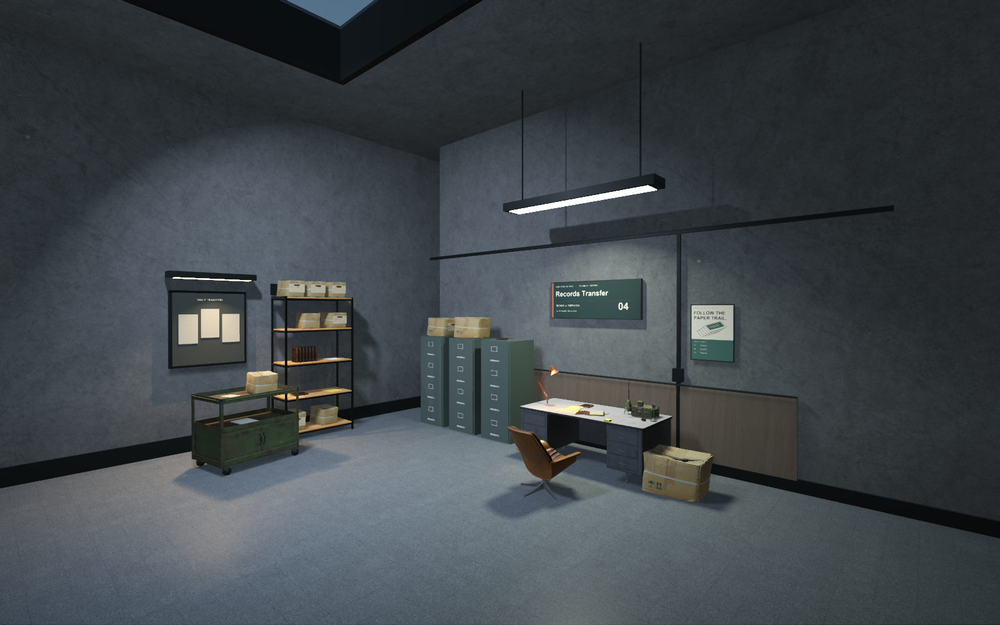
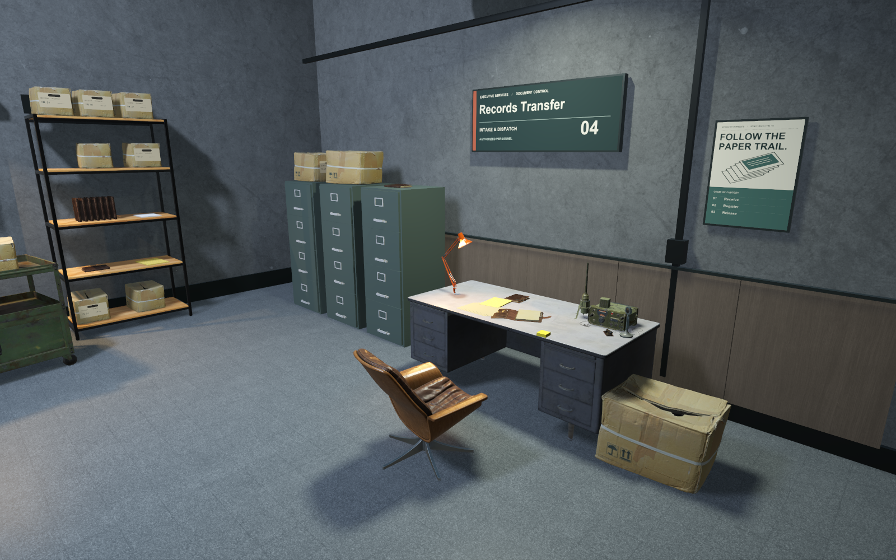
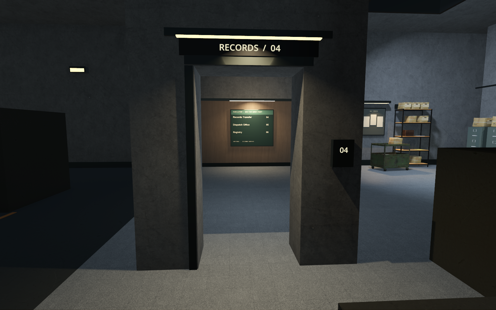
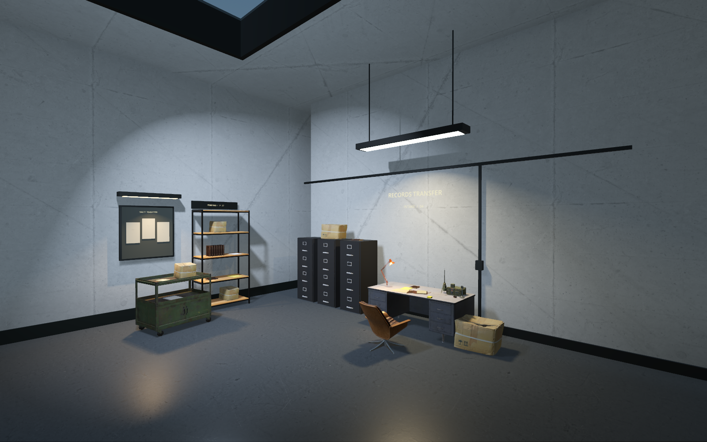
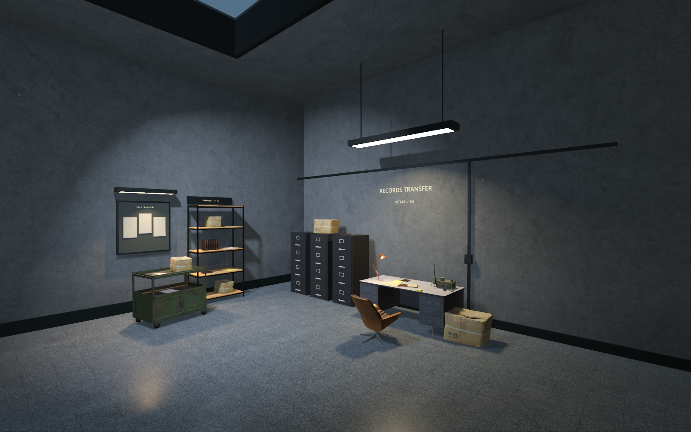

2026-11-18 · GODOT 4.7.2 / METAL FORWARD+ · 1600 × 1000
Control 局部：新参考、新管线与实机结果
新参考与小样淘汰让选材更有依据；最终局部的地面、柜面、标识和门后层次比旧版更可读。但主体资产质量没有跨级提升，陈设仍较展示化，墙面和地坪尚未达到参考的材质层次。
指定 GPT-6.2 astra 的 subagent 使用新版 godot-envart（ce9bf03），从现有室内局部继续迭代。参考、模型、流程与素材决策共同变化，因此这是整轮工作的案例评估，不能单独证明模型或 skill 的因果提升。原白盒与旧版保留；用户尚未确认本轮美术。
同机位：旧版与本轮
修改前使用未覆盖的 detail-01；修改后从保存场景重新加载捕获。三个机位的位置、朝向和 FOV 保持一致；以下是引擎输出，没有后期修图。
室内整体



柜门朝向和灰绿涂漆使档案区更明确，岗位标识与少量带标签纸箱补足用途；地面获得独立表面信息。整体仍是相同体量与布局，上半部较空，纸箱和柜体的重复可见。
材质与工作区近景



近景能读到连续混凝土、竖向饰面、柜门五金及地坪颗粒。相较首轮，粗噪点和偏红横纹受到控制；柜体侧面依旧过平，地坪偏哑，尚缺参考水磨石更清楚的骨料与宽缓反光层次。
门洞与空间衔接



门后新增的目录、饰面和局部灯形成可读落点，门洞净空保留；首轮白色反光斑已消除。左下的新旧地面分界生硬，门侧白盒仍可见，只完成局部而非整场。
参考是否真的更适合环境制作
PC Gamer：Control 光追实测中的储藏室：主参考。地面、混凝土、桌面设备、档案箱组和墙贴可辨，人物主要遮挡前景局部；光追设置会影响反射，不能直接照搬参数。
Jeuxvideo：Appel anonyme / Dead Letters 走廊：辅助过渡参考。木饰面、导视、门侧空间和灯具可见；只借鉴过渡关系，不复制红毯和封闭双门。旧战斗图降为氛围补充。
看图评价
| 维度 | 证据与判断 |
|---|---|
| 参考筛选 | 确有改善：从遮挡严重的战斗宣传画面，换成能直接研究表面、家具关系和过渡的实机图，并记录各图限制。主 Agent 逐张核对了两张图。 |
| 素材筛选 | 小样阶段实际淘汰了出现大斜格的墙面 A，选择连续墙面 B；新增 Poly Haven 水磨石与木皮扫描材质，复用旧授权模型并适配柜身。这证明了候选检查与适配有进展，但没有找到更高质量的新建筑/柜体模型，不能据此宣称三维资产检索能力显著提升。 |
| 细节填充 | 带用途的标识、纸箱标签和门后目录使场所更易理解；箱子同款特征、等距排列与几处孤立陈列组仍明显，密度组织提升有限。 |
| 风格统一 | 混凝土、灰绿金属、收敛后的木饰面和档案活动更加协调；但柜体构造较简、货车磨损重、纸箱重复，整体仍未接近 Control 的完成度。 |
| 光影 | 地面和柜体暗部更可读，门后有焦点，首轮过强镜面光斑得到修正。主墙大面积均匀受光与强灯具投影仍在；这是同时改材质/灯光/陈设的整体修订，不能归为纯灯光提升。 |
| 流程收益 | 存在可观察收益：参考资格→候选实渲→淘汰错误大表面→冻结首轮→独立复核→有范围反馈的链条实际执行。最终改善是局部的；样本只有一个，包含主 Agent 反馈，不构成模型排名或新流程普适优越性的证明。 |
真正用于淘汰候选的实机小样




样品与最终场景的地面、材质和灯光存在变化；这些图片用于说明候选取舍，不是单变量测试。
迭代与证据边界
小样 A/B：subagent 独立完成并先于正式装配淘汰 A。两张 room 图均冻结；候选不是事后编写的选择理由。
astra-v2-01：独立首轮，三个机位已保存。主 Agent 看到地面高频颗粒和镜面白斑过强，木纹像横向错缝地板，海报抢眼。
astra-v2-02：subagent 在收到具体美术反馈前自行完成，调整地坪、柜漆、镜面光和海报；其记录指出地面压得偏平、海报被管线遮挡。主 Agent 未把此轮作为最终结果。
astra-v2-03：主 Agent 反馈后的最终轮，恢复适量骨料变化、改纵向饰面并收敛色彩，移开海报，保留门后落点，不继续增箱。主 Agent 逐张查看最终三图；未由主 Agent 代做场景。
这是指定模型在已有场景上的继续迭代。subagent 可以读取现有案例和历史约束，并非从零盲测；没有用户美术验收。
过程图：独立首轮 room · 独立二轮 room · 反馈后三轮 room。三个轮次目录均保留完整三机位。


打开与继续编辑
导入 独立试验工程。F5 保留旧版 interior_detailed.tscn。打开 interior_astra_v2_03.tscn 后按 F6 看本轮；Cameras 下可预览 room、props、door。旧版与三个新轮次均可编辑，未改默认入口。
直接重新加载核对最终场景：17 个原白盒 body 的变换、网格与碰撞及三个相机变换/FOV 保留。整合文档之前检查的 222 个既有文件哈希均未改变。真实截图由图形后端输出；退出时仍有 7 个 Texture RID 清理警告。没有运行玩法回归或开发控制器。